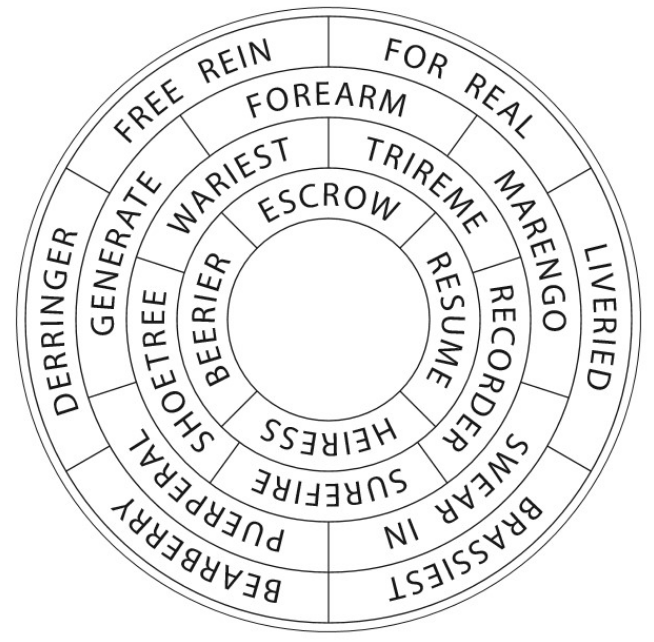

My, they make merry.
- FOR REAL
- LIVERIED
- BRASSIEST
- BEARBERRY
- DERRINGER
- FREE REIGN
- FOREARM
- MARENGO
- SWEAR IN
- PUERPERAL
- GENERATE
- TRIREME
- RECORDER
- SUREFIRE
- SHOETREE
- WARIEST
- ESCROW
- RESUME
- HEIRESS
- BEERIER
(Your answer will be a four letter word.)

- Which word, when spelled backwards, becomes a conjunction followed by a pronoun? (1)
- ...is a homophone of a word for a part of the eye? (1)
- ...when spelled backwards, is one of the seven dwarfs? (4)
- ...can be either a noun in English or a verb in Latin? (1)
- ...without the first letter, is a word that means "help"? (9)
- ...becomes a bird after you delete a letter? (2)
- ...is made up entirely of Roman numerals? (2)
- ...when spelled backwards is the locale of a major puzzle event? (1)
- ...is a past tense verb that becomes present tense when you double a letter? (2)
- ...has two homophones that are one letter longer than itself?
- ...becomes word #19 when you advance the fourth character one letter in the alphabet? (2)
- ...becomes a plural animal when you move the first letter to the end? (6)
- ...can be split into two words? (2)
- ...forms a new word when followed by word #15?
- See #14 (1)
- ...begins with a silent letter? (6)
- ...becomes a pronoun when you drop the last letter? (4)
- ...can go after "cry" or before "talk"? (4)
- See #11 (2)
- ...is a homophone of a word meaning "trash"? (1)